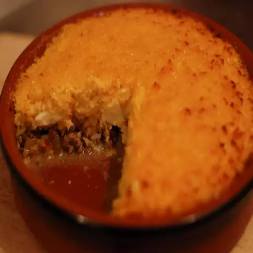

Pastel de choclo

A typical chilean dish
This is one of the best dishes the chilean cuisine has to offer. Enjoy!
Ingredients
Pino:
- Eggs: 2 eggs.
- Oil: 1 tablespoon vegetable oil.
- Onion: 2 onions, chopped.
- Garlic: 2 cloves garlic, minced.
- Salt: 1 teaspoon salt.
- Paprika: ½ teaspoon paprika.
- Pepper: Ground black pepper to taste.
- Meat: 1 pound ground beef.
- Chicken: ½ broiled chicken, chopped.
- Raisins: 2 tablespoons raisins, or to taste.
- Olives: 1 ½ tablespoons chopped Kalamata olives, or to taste
Paste:
- Corn: 3 (15.25 ounce) cans sweet corn, drained.
- Basil: 2 teaspoons dried basil.
- Butter: 1 tablespoon butter.
- Milk: 1 cup milk.
- Sugar: 2 teaspoons white sugar, or to taste.
- Salt: Salt to taste.
Instructions
- Prepare eggs: Place eggs in a saucepan and cover with water.
Bring to a boil, remove from heat, and let eggs stand in hot water for 15 minutes.
- Pino mixture: Meanwhile, heat oil in a skillet over medium heat.
Add onions, garlic, a pinch of salt, 1/4 teaspoon paprika, and some pepper. Cook until fragrant, about 2 minutes.
Add beef; add remaining salt, paprika, and more pepper. Cook and stir until mostly browned, about 5 minutes.
Add chicken, raisins, and olives.
- Peel eggs: Remove eggs from hot water, cool under cold running water, and peel.
Roughly chop and add to the beef mixture. Keep pino mixture warm.
- Paste: Puree corn with basil in a blender or food processor. Pour into a saucepan over medium heat.
Add butter; cook and stir until thickened, 7 to 10 minutes. Stir in milk, sugar, and salt.
Continue cooking until thickened to a paste, about 15 minutes more.
- Oven: Preheat the oven to 350 degrees F (175 degrees C).
- Setup: Spread pino into a baking dish. Cover with the corn paste. Sprinkle a little sugar on top.
- Cook: Bake in the preheated oven until golden brown on top, about 20 minutes.
Return to home